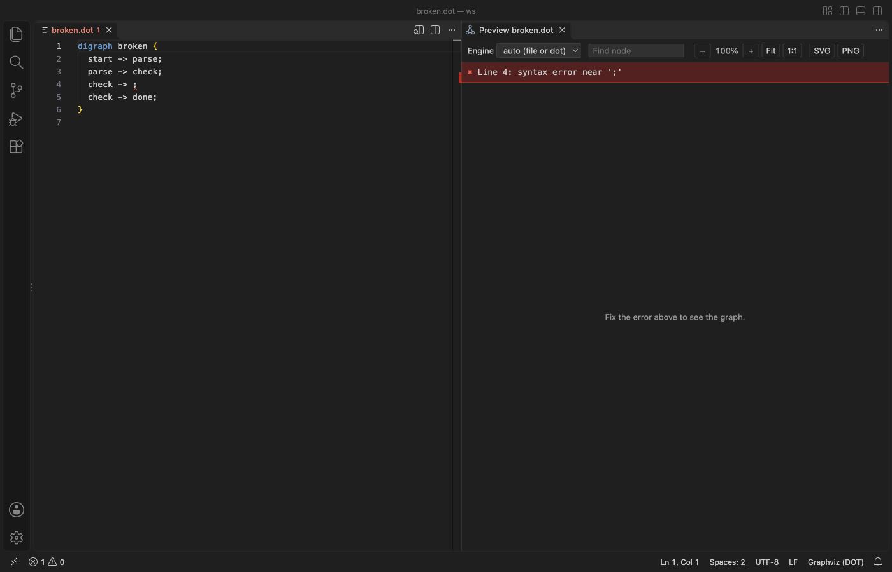
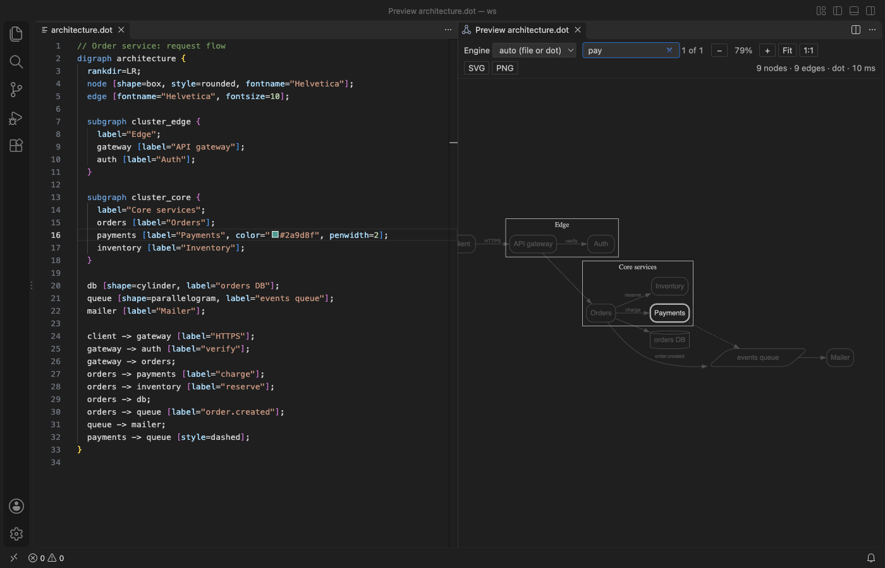
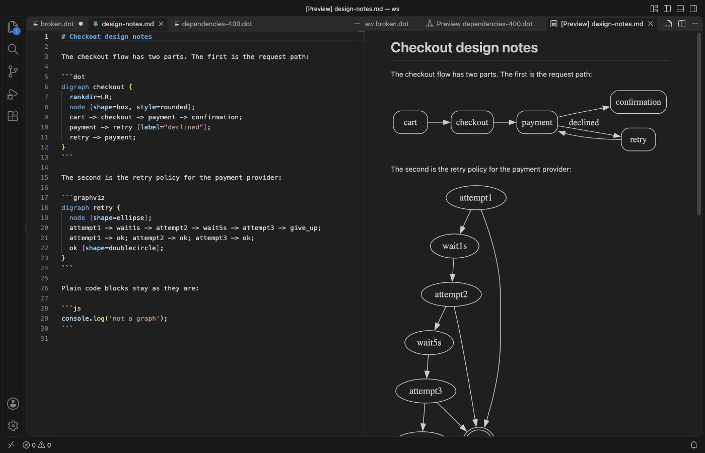
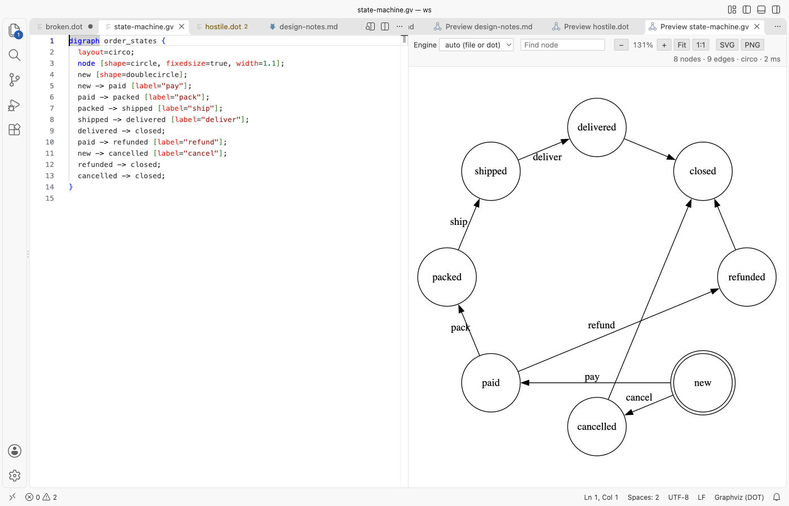

Graphviz Viewer & DOT Viewer (Live Preview)
Graphviz Viewer & DOT Viewer (Live Preview), a VS Code extension by Zovo
Graphviz viewer and DOT viewer for .dot and .gv files and dot blocks in Markdown, with live preview, error lines, pan, zoom and SVG or PNG export. Offline.
Free, MIT license. Needs VS Code 1.90.0 or newer. Extension ID zovo.zovo-graphviz-preview, version 0.1.4.
See your Graphviz graph beside the .dot file as you type, click a node to jump to its line, and export it to SVG or PNG, with no Graphviz install.

Real output from VS Code 1.142 on macOS. The file is architecture.dot from scripts/make-samples.js, opened from the installed .vsix and captured through the debug port.
- Nothing to install. Graphviz 16.1 ships inside the extension as WebAssembly, so it works on a locked-down laptop, in a container and on a plane. Layouts run in a separate thread with a time limit, so a huge graph can't freeze VS Code.
- Errors land on the right line. A syntax error is underlined in the editor and listed in Problems, and the preview keeps the last good drawing while you fix it.
- It reads like part of VS Code. Default black lines and text take your theme's colors in dark mode, and colors you set in the graph stay as they are.
Quick start
- Install Graphviz Preview & DOT Viewer.
- Open a
.dotor.gvfile and click the preview icon in the editor title, or press Cmd+K V (Ctrl+K V on Windows and Linux).
"Graphviz: Get Started" in the Command Palette opens a short tour.
Questions people ask
Is Graphviz Viewer & DOT Viewer (Live Preview) free?
Yes. Graphviz Viewer & DOT Viewer (Live Preview) is free and MIT licensed.
How do I install Graphviz Viewer & DOT Viewer (Live Preview)?
Click "Install in VS Code" above, or search for zovo.zovo-graphviz-preview in the Extensions view.
What it does
The preview redraws 300 ms after you stop typing. You don't need to save. The status line shows the node and edge count, the engine and the layout time.

Click the banner line to put the cursor on the error. Warnings, such as an unknown shape, show in the same banner in yellow and in Problems.
Pan, zoom, find and jump
Drag to pan. The mouse wheel and trackpad also pan, and Cmd or Ctrl plus the wheel zooms at the pointer. Fit and 1:1 reset the view, and the keys +, -, 0 and 1 do the same when the graph has focus.
Type in Find node to light up every node whose name or label matches. The rest fade out. Enter moves to the next match and centers it, and Shift+Enter goes back. Click any node, edge or cluster to put the cursor where it's written in the source. For a node that is the line where it's declared with attributes, or else its first edge.

Layout engines
Pick dot, neato, fdp, sfdp, circo or twopi from the toolbar. "auto" uses the layout= attribute of the graph, or dot when there is none. A layout= in the file wins over the picker, and the status line says so. Set the default for new previews with graphvizPreview.defaultEngine.
Dot blocks in Markdown
Fenced blocks with the language dot, graphviz or gv are drawn in VS Code's own Markdown preview. Run "Graphviz: Open Preview to the Side" in a Markdown file to get the full preview for one block. It follows the block under your cursor, and a picker lists them all.

Export
SVG saves the Graphviz output. PNG saves it at 2x on a white background. Both use the original Graphviz colors, not the dark-theme colors, so the file looks right in a document or a wiki. The save dialog starts next to the source file.

Settings
| Setting | Default | What it does |
|---|---|---|
graphvizPreview.defaultEngine | auto | Engine for new previews |
graphvizPreview.updateDelayMs | 300 | Wait after typing before redrawing |
graphvizPreview.renderTimeoutSeconds | 15 | A longer layout is stopped and the preview says so |
graphvizPreview.maxSourceKB | 4096 | Bigger graphs are not laid out |
graphvizPreview.theme | auto | auto, light, dark or original colors |
graphvizPreview.markdownPreview | true | Draw dot blocks in the Markdown preview |
graphvizPreview.markdownMaxBlockKB | 256 | Bigger blocks are not drawn in the Markdown preview |
graphvizPreview.askForRating | true | Ask for a Marketplace rating after 3 graphs that rendered without an error, on 2 different days. "Later" asks one more time after 7 days, "No thanks" never again. It never asks after an error. Turn it off with false. |
graphvizPreview.showSupportLinks | true | Show the small Sponsor and More free viewers links under the graph |
Privacy and safety
The extension makes no network calls and has no telemetry. The preview runs under a strict Content Security Policy with no remote sources. Graphviz output is cleaned before it's shown, which removes scripts, external links (URL and href attributes) and images. Label text is always shown as text. Graphviz runs on a virtual file system inside WebAssembly, so an image= attribute can't read files from your disk.
Limits
- One preview per file. Previews are not restored after a restart.
- Diagnostics come from the open preview. Close it and the problems for that file go away.
image=attributes and HTML labels with<IMG>draw no picture, by design.- Very large or dense graphs can take a while with dot. sfdp is usually much faster for thousands of nodes.
License
MIT. The bundled @viz-js/viz is MIT and contains Graphviz (Eclipse Public License 1.0). See THIRD-PARTY-NOTICES.md.
Install Graphviz Viewer & DOT Viewer (Live Preview)
Click the button to open VS Code and install it, or press Ctrl+P (Cmd+P on macOS) in VS Code and run ext install zovo.zovo-graphviz-preview.
Free, MIT license. Needs VS Code 1.90.0 or newer. Extension ID zovo.zovo-graphviz-preview, version 0.1.4.
Source code and issues are on GitHub.
Support this work
If this extension saves you time, you can support the work on GitHub Sponsors. Monthly tiers start at $5, and one-time tiers start at $15. Sponsorship is optional, and the tool works the same without it.